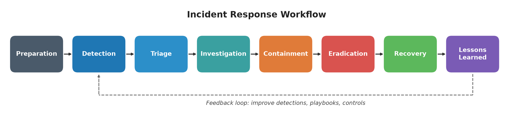

Malware Incident Response
Case study of a real incident on a personal Windows PC: detecting and containing DLL-sideloaded malware with registry and scheduled-task persistence.
John Danko
SOC Analyst | SIEM, Log Analysis, Incident Response & Threat Detection | B.S. Computer Information Science, Cybersecurity
Cybersecurity graduate based in Greater Philadelphia, pursuing an SOC Analyst role. Hands-on practice in SIEM, log analysis, network traffic analysis, and incident response. B.S. in Computer Information Science, Cybersecurity specialization, Gwynedd Mercy University (Cum Laude, Fall 2024).

Selected repositories from github.com/john-danko-cyber. Course labs are marked as such.
Case study of a real incident on a personal Windows PC: detecting and containing DLL-sideloaded malware with registry and scheduled-task persistence.
Original SOC playbooks for phishing, malware, brute force, ransomware, and suspicious logins, based on NIST SP 800-61 and MITRE ATT&CK.
Simulated internal security audit assessing organizational risks, security controls, compliance requirements, and recommended remediation.
Course lab
CompTIA course lab: identifying social engineering in a user's inbox and deciding which emails to keep or delete.
Course labs
Google Cybersecurity Certificate Python labs covering conditionals, loops, functions, strings, lists, regular expressions, and file I/O for security automation.
Course lab
CompTIA course lab: triaging a Wazuh SIEM alert in DFIR-IRIS, classifying it as a false positive, and mapping the lab network.
Course lab
CompTIA course lab: assessing email, host, and network border attack surfaces.
Course lab
Google Cybersecurity Certificate lab: tcpdump analysis of a website redirect to a malicious lookalike site.